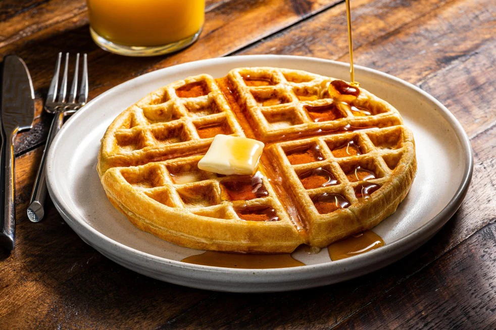

Classic Waffles

Description
There are waffles... and then there are
your grandma's waffles! Enjoy the taste of
home sweet home with this recipe - nothing
beats the classics!
Ingredients
- 2 cups all-purpose flour
- 1 teaspoon salt
- 4 teaspoons baking powder
- 2 tablespoons white sugar
- 2 eggs
- 1 1/2 cups warm milk
- 1/3 cup butter, melted
- 1 teaspoon vanilla extract